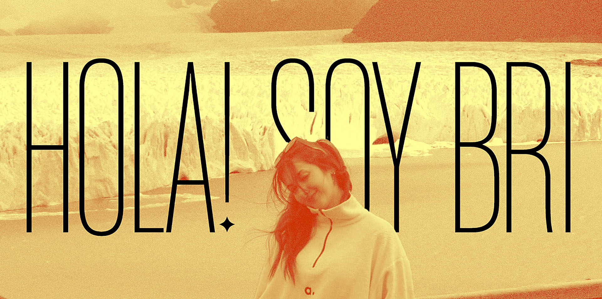
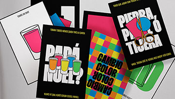
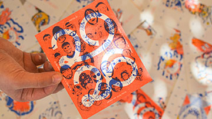
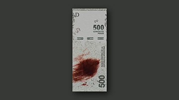
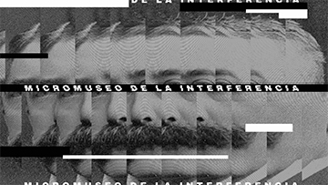
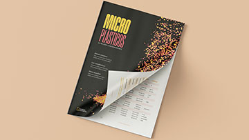
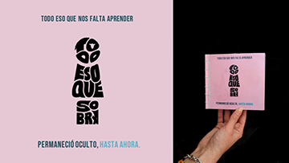

... pero también me dicen Brichi, y esa es mi marca personal.

... pero también me dicen Brichi, y esa es mi marca personal.
MADE IN ARGENTINA [PERO CON INGLÉS C1, OJO]
⭒ Resolutiva ⭒ Proactiva ⭒ Responsable ⭒ Comprometida ⭒ Creativa ⭒ Comunicativa ⭒ Descontracturada ⭒ Mi experiencia y formación me impulsan a encontrar soluciones a todo tipo de problemas, utilizando todas las herramientas técnicas y proyectuales aprendidas e incorporadas, al aprendizaje constante, actuar bajo presión y el intercambio con otros.





